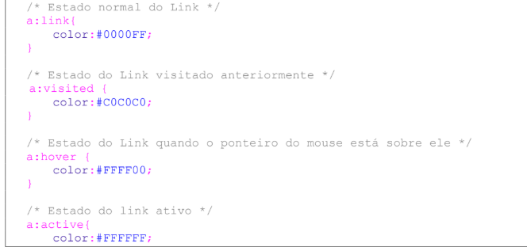
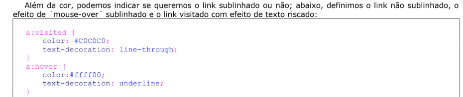
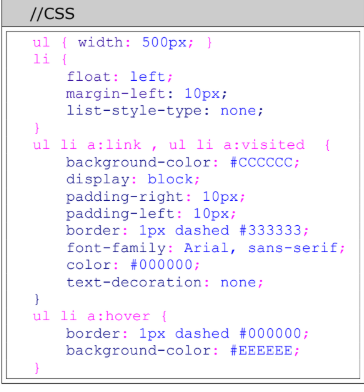
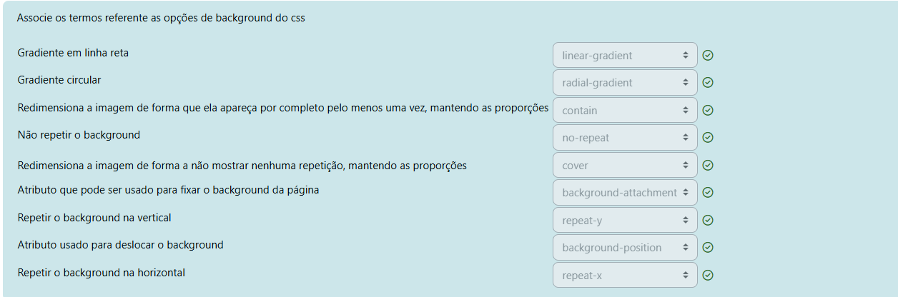

importancia 1
importancia 2
importancia 3
seletor{propriedade:valor;}
obs: ponto e virgula: facultativo caso de propriedade unica e sendo o ultimo
para varios seletores, podem ser agrupados e separados por virgula
h1,h2,h3{
color: black;
font-family:"comic sans ms"
}
classe:
.destaque{
color:red;
}
id:
#box{
padding:20px;
}
arvore dom:
acompanha a estrutura do documento: sera valida para os itens
que estao dentro da estrutura (ul li a), ou seja, pegara somente
os links que estiverem dentro do parenteses
//css
ul li a{
font-variant: small-caps;
text-decoration:none;
}
//html
combinador de filho direto:
//html
//css
body > .nomeClasse {
color: red;
}
| Parte | Significado |
| `body` | Elemento pai |
| `>` | Filho direto |
| `.nomeClasse` | Elemento com a classe especificada |
| `{ ... }` | Estilo a ser aplicado |
color: cor da fonte
font-family: tipo de fonte
font-size: tam da fonte
font-style: estilo de fonte (italico e obliquio eh a msm coisa)
font-variant: fonte maiusculas de menor altura
font-weight: variacoes negrito
text-transform: maiuscula, minuscula, versalete
text-decoration: sublinhado, tracado, etc
line-height: altura da linha, aumenta espacamento
background-color: cor do fundo
background-image: img fundobackground-repeat: se vai repetir (repeat/no-repeat), apenas
na vertical (repeat-y), apenas horizontal (repeat-x)
background-attachment: se a img de fundo "rola" ou nao c tela
background-position: como e onde a img de fundo eh posicionada
letter-spacing: espacamento entre letras
word-spacing: espacamento entre letras
text-align: alinhamento do texto
text-indent: recuo do texto (esconde texto com valores negativos -20000pt)
white-space: como o browser trata espaco em braco (pre, nowrap)
| CSS | Resultado |
| `white-space: normal` | Espaços extras são ignorados. Sem quebras manuais. |
| `white-space: nowrap` | Tudo em uma linha só, sem quebra automática. |
| `white-space: pre` | Tudo é mantido exatamente como no HTML. |
| `white-space: pre-wrap` | Igual ao `pre`, mas com quebra automática de linha. |
| `white-space: pre-line` | Quebras de linha mantidas, mas espaços extras ignorados. |
display: como sera exebido p obj e tipo (bloco, inline, none(esconde obj))
width: largura box
height: altura box
float: opcao de flutuamento do Elemento left, right
clear: parar e flutuar
margin(-top,right,bottom,left): tam margin
padding(-top,right,bottom,left): espacamento entre o item e o conteudo do item
position: absolute = passar a posicao com outras propriedades, leva em consideracao a pagina toda
relative: relativo ao obj que esta contido
visibility: se a div sera visivel ou nao, a diferença de visibility: hidden
para display: none; é que usando a opcao display o espaco ocupado pelo obj é liberado enquanto o visibility nao
overflow: o que ira acontecer caso o conteudo ultrapasse o espaco da div ou obj:
(visible=modifica o tam do componente e mostra o conteudo (padrao)
hidden = esconde oq ultrapassar
auto= coloca o scroll caso necessite
scroll= força o scroll sempre)
AS PROXIMAS essas só funcionam com position: absolute
z-index: altura(sobreposição), quanto maior o numero mais pra cima fica
top, left, right, bottom: distancia do obj
border-style:
| Valor | Aparência |
| `none` | Sem borda |
| `solid` | Linha sólida (cheia) |
| `dotted` | Pontilhada (bolinhas) |
| `dashed` | Tracejada (traços curtos) |
| `double` | Dupla linha |
| `groove` | Linha em baixo relevo |
| `ridge` | Linha em alto relevo |
| `inset` | Faz parecer "afundado" no conteúdo |
| `outset` | Faz parecer "saído" para fora |
border-wight: tam
border-color: cor
list-style-type:
| Valor ul | Resultado |
| `disc` | ● (padrão) |
| `circle` | ◦ (círculo vazio) |
| `square` | ■ (quadrado) |
| `none` | Sem marcador |
| Valor ul | Resultado |
| `decimal` | 1, 2, 3, ... |
| `decimal-leading-zero` | 01, 02, 03, ... |
| `lower-roman` | i, ii, iii, ... |
| `upper-roman` | I, II, III, ... |
| `lower-alpha` | a, b, c, ... |
| `upper-alpha` | A, B, C, ... |
| `none` | Sem marcador |
list-style-image: img como marcador da lista
list-style-position: onde o marcador da lista eh posicionado
cursor: modifica cursor
filter: alguns filtros como opacidade preenchimento
ex
| Filtro | Exemplo CSS | Efeito produzido |
| `blur(px)` | `filter: blur(5px);` | Desfoca o conteúdo |
| `brightness(%)` | `filter: brightness(150%);` | Deixa mais claro (ou escuro com `<100%`) |


sempre lembrar de acessibilidade caso for usar background-image

